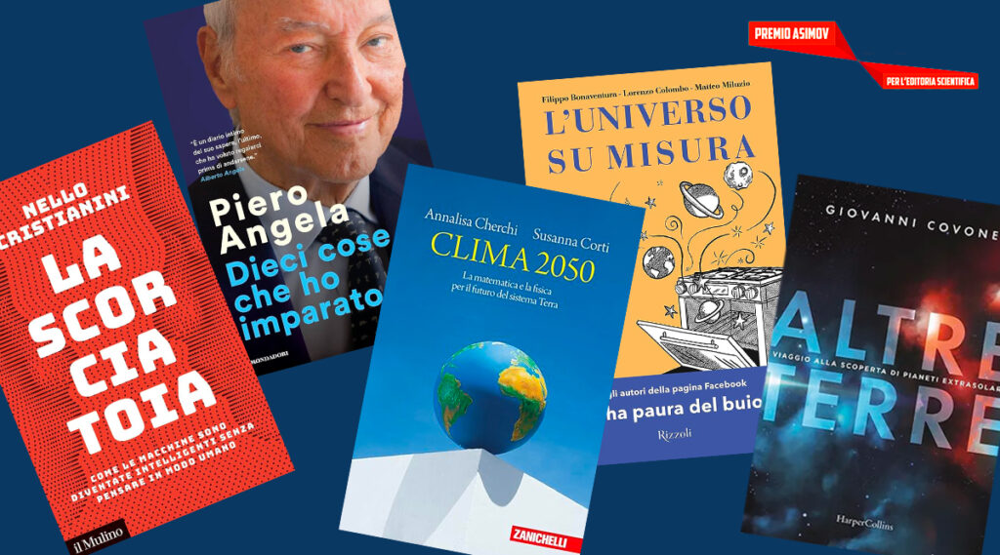

Premio Asimov
Durante l’anno scolastico 2023/2024, nell'ambito dei percorsi di Formazione Scuola Lavoro (FSL), ho partecipato attivamente al progetto nazionale "Premio Asimov", un'iniziativa di eccellenza per la divulgazione scientifica. L'attività principale ha previsto lo studio, l'analisi e la stesura di una recensione critica dedicata al saggio "L'universo su misura".
Galleria Fotografica (1 Foto)
